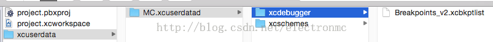
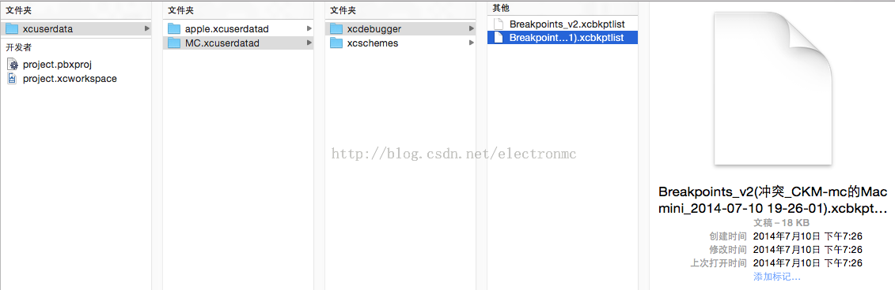

关于App断点不停问题
遇到过两次app断点不停的问题。搜过网上很多资料说如何解决，无非是在围绕Xcode设置的改变。修改了之后还是不行。后来找到网上一个解决方法是：选中Xcode的项目，在Finder中打开内容，删除*.pbxuser和*.mode1v3文件，重新打开project下断点。苦于没有找到*.pbxuser和*.mode1v3这两个文件，所以很苦恼，不知道如何改。后来用终端 find / -name *.pbxuser -print寻找整个电脑中的类似文件。终于找到了.
处理方式：需要在xx.xcodeproj项目中显示包内容，包开打开如下：
在xcuserdata中正常应该如下所示:
断点不能停的app中，是这样的：
明显可以看到，Breakpoints文件冲突了，所以要删除这个文件。不过我删了这个文件后还是断点还是不停，我就把xcuserdata中两个文件夹中的内容都删除了。app还是会照样运行的。这样断点不停问题就解决了。不过还有不明白的问题是xcuserdata中文件的作用是什么。breakpoints文件应该是存储断点信息，但是另外一个文件夹中的两个文件作用不是太清楚了。总之，关于断点不停，只要删除上面的文件，clean一遍在运行就可以了。引起这个问题的原因是xcodeproj乱拷贝造成的问题。